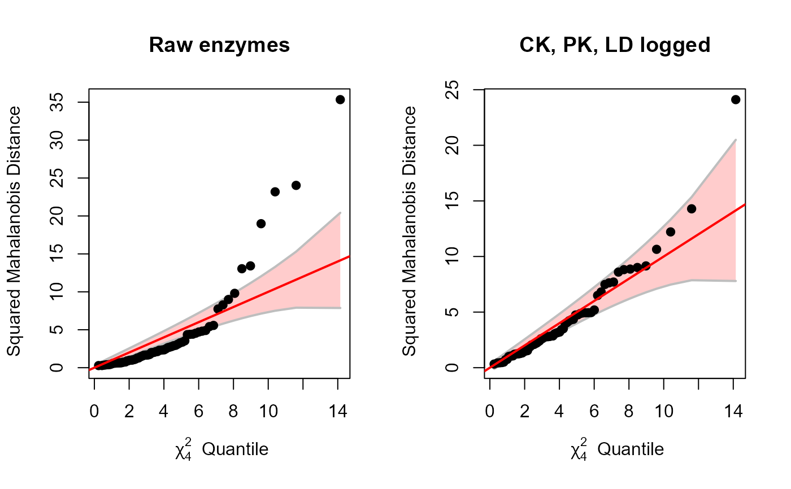
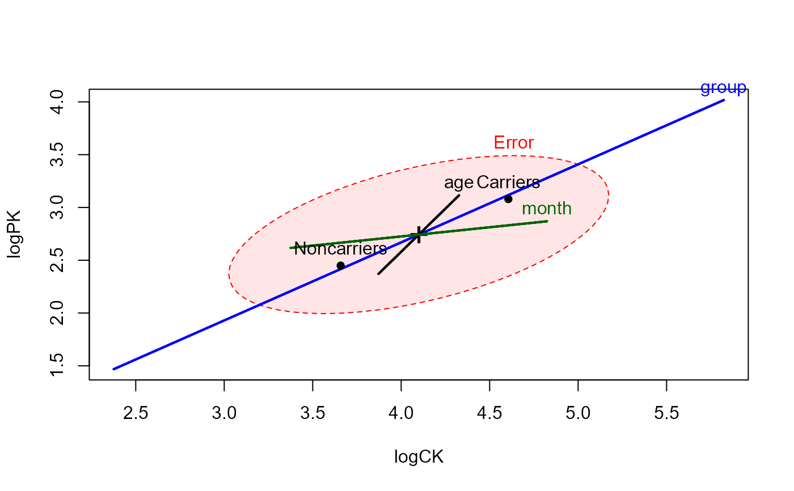
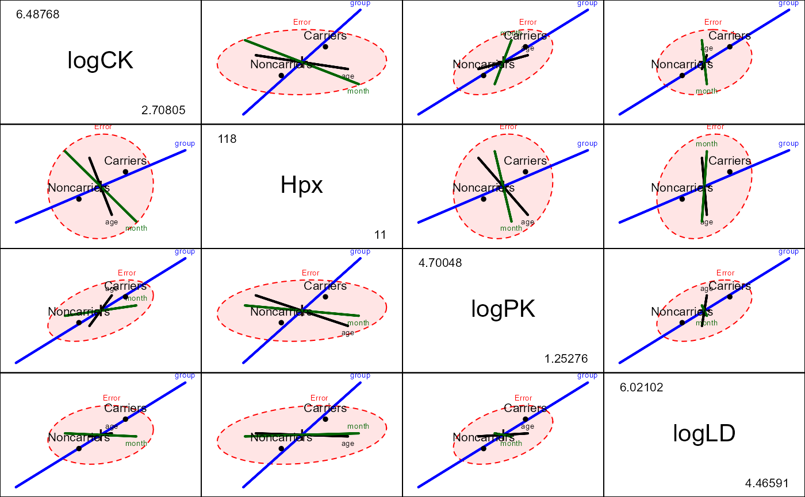
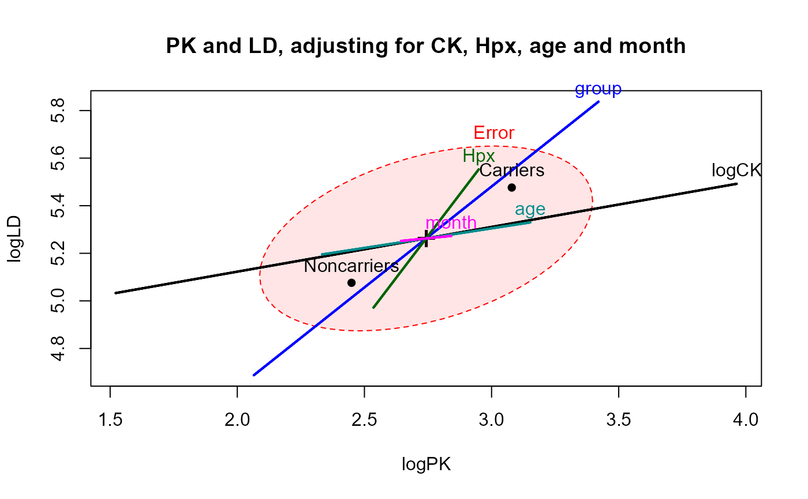
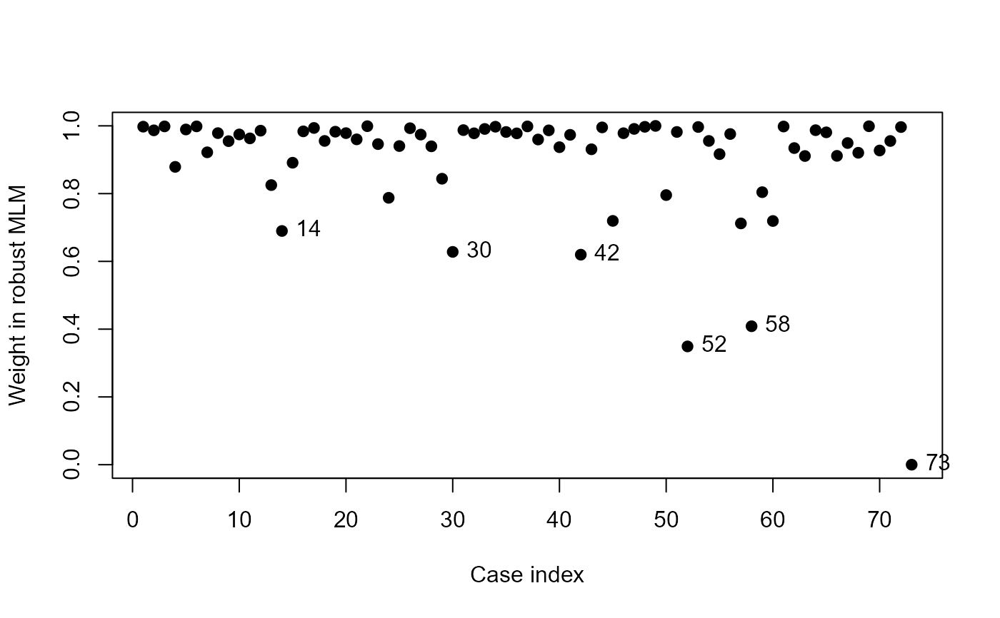
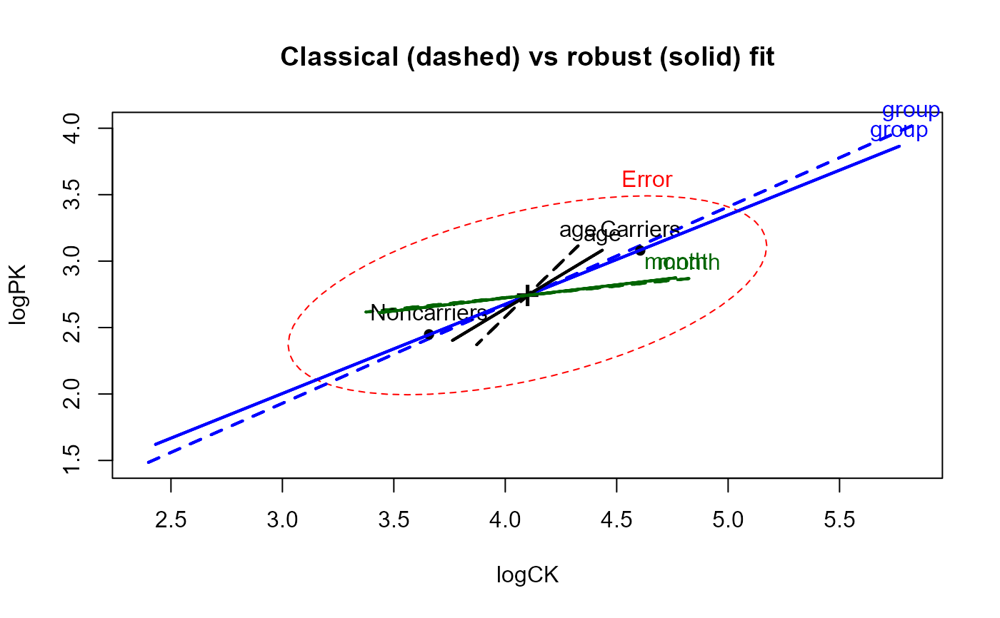

Data from a study to find a screening procedure for women who carry Duchenne muscular dystrophy, which is passed from female carriers to some of their sons. Four blood enzymes were measured in 39 noncarriers and 34 carriers, together with their age and the month the measurements were taken.
The study asked: how well do the enzymes separate the two groups? Two of them, creatine kinase and hemopexin, are cheap to measure, and two, pyruvate kinase and lactate dehydrogenase, are expensive. Do the expensive ones add anything? Age and month can be treated as covariates, giving a MANCOVA.
Format
A data frame with 73 observations on the following 7 variables.
group: a factor with levelsNoncarriers,Carriersage: age, in yearsmonth: month in which the measurements were taken (1–12)CK: creatine kinaseHpx: hemopexinPK: pyruvate kinaseLD: lactate dehydrogenase
Source
Rencher, A. C. & Christensen, W. F. (2012), Table 5.7, from the
rencher package (table5.7). Originally from Andrews, D. F. &
Herzberg, A. M. (1985). Data: A Collection of Problems from Many Fields
for the Student and Research Worker. New York: Springer, pp. 223–228.
Details
Rencher & Christensen (2012, Problem 5.19) list the last two variables as lactate dehydrogenase then pyruvate kinase. The values suggest the reverse (the fifth column runs 3.5–110, the sixth 87–412), and the original data of Andrews & Herzberg (1985) have the order CK, H, PK, LD, which is used here.
Hemopexin is called Hpx here, rather than H, so it is not confused
with an \(\mathbf{H}\) matrix.
The enzyme measurements are positively skewed, with some large values
(CK up to 657), so analyses are usually on log scales for CK, PK
and LD. This also makes the data useful for comparing classical and
robust fits (robmlm()).
References
Rencher, A. C. & Christensen, W. F. (2012). Methods of Multivariate Analysis, 3rd ed. Hoboken, NJ: Wiley. Problems 5.19, 7.23, 8.9.
Examples
data(Dystrophy)
table(Dystrophy$group)
#>
#> Noncarriers Carriers
#> 39 34
# the enzymes are skewed; log CK, PK and LD
Dystrophy <- within(Dystrophy, {
logCK <- log(CK); logPK <- log(PK); logLD <- log(LD)
})
op <- par(mfrow = c(1, 2))
cqplot(Dystrophy[, c("CK", "Hpx", "PK", "LD")], main = "Raw enzymes")
cqplot(Dystrophy[, c("logCK", "Hpx", "logPK", "logLD")],
main = "CK, PK, LD logged")

par(op)
# MANCOVA: age and month are covariates. Each term has 1 df, so each
# H ellipse is a line.
dmd.mod <- lm(cbind(logCK, Hpx, logPK, logLD) ~ group + age + month,
data = Dystrophy)
car::Anova(dmd.mod)
#>
#> Type II MANOVA Tests: Pillai test statistic
#> Df test stat approx F num Df den Df Pr(>F)
#> group 1 0.43897 12.9100 4 66 8.064e-08 ***
#> age 1 0.08570 1.5466 4 66 0.19904
#> month 1 0.12861 2.4352 4 66 0.05582 .
#> ---
#> Signif. codes: 0 '***' 0.001 '**' 0.01 '*' 0.05 '.' 0.1 ' ' 1
heplot(dmd.mod, variables = c("logCK", "logPK"),
fill = TRUE, fill.alpha = 0.1)

pairs(dmd.mod, fill = TRUE, fill.alpha = 0.1)

# Do the expensive enzymes (PK, LD) separate the groups beyond the cheap
# ones (CK, Hpx)? Use the cheap ones as covariates.
dmd.mod2 <- lm(cbind(logPK, logLD) ~ group + logCK + Hpx + age + month,
data = Dystrophy)
car::Anova(dmd.mod2)
#>
#> Type II MANOVA Tests: Pillai test statistic
#> Df test stat approx F num Df den Df Pr(>F)
#> group 1 0.186951 7.5880 2 66 0.001081 **
#> logCK 1 0.250087 11.0051 2 66 7.505e-05 ***
#> Hpx 1 0.050463 1.7538 2 66 0.181086
#> age 1 0.036535 1.2514 2 66 0.292806
#> month 1 0.002287 0.0756 2 66 0.927224
#> ---
#> Signif. codes: 0 '***' 0.001 '**' 0.01 '*' 0.05 '.' 0.1 ' ' 1
heplot(dmd.mod2, fill = TRUE, fill.alpha = 0.1,
main = "PK and LD, adjusting for CK, Hpx, age and month")

# robust fit: does down-weighting outlying cases change the picture?
dmd.rob <- robmlm(cbind(logCK, Hpx, logPK, logLD) ~ group + age + month,
data = Dystrophy)
plot(dmd.rob)

heplot(dmd.mod, variables = c("logCK", "logPK"), lty = 2,
main = "Classical (dashed) vs robust (solid) fit")
heplot(dmd.rob, variables = c("logCK", "logPK"), add = TRUE, lwd = 2)
